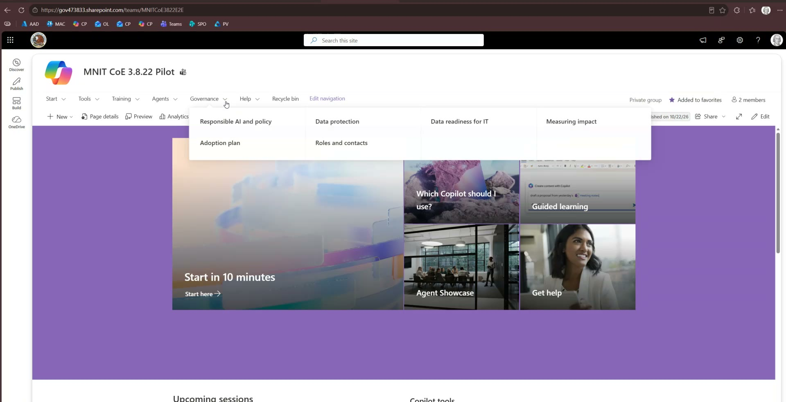

Use this page to install the Government-StateLocal content pack in a GCC Moderate tenant. Follow
the same eight installation phases as the higher-ed guide and the
canonical Admin Quickstart. The profiles supply different content;
the installation and acceptance boundaries are the same. GCC High and DoD are unsupported.
GCC Moderate walkthrough video (eight phases)
This narrated 3.8.22 walkthrough follows the same eight phases as the
higher-ed guide. The footage comes from an internal lab
installation, so the tenant, agency and account names on screen are lab values, not values to copy.
Ten narrated sections (introduction, eight phases, and closing) · about 7 minutes · English captions included.
Recorded with release 3.8.22. The video is a summary, not a substitute for this page:
use the commands and cautions below, including the Allow public client flows check, the naming-policy gate, the
STOP / PROCEED prompts, and no routine -RepairCapturedPages. The footage is from a lab installation and is not a customer acceptance run.
INTRO
In this walkthrough, we'll install release 3.8.22 using the Government State and Local content pack in GCC Moderate. We'll follow the same eight phases as the higher education guide.
The footage comes from an internal lab installation, so the tenant, agency, and account names you see on screen are lab values, not values to copy.
We'll verify the package, configure the settings, install the site, and review the result. Passing the automated checks is only part of deciding whether a deployment is ready for production.
PHASE 1 - Verify and extract the release package
Download the release 3.8.22 implementation ZIP and its SHA256 receipt, not GitHub's automatically generated source archive.
Run Get-FileHash on the ZIP and compare the result with the expected hash in the receipt. Continue only if they match.
Use a new empty install folder. Copy the Government State and Local content pack to a separate organization folder. Keep settings and records outside the extracted kit so a future release cannot overwrite them.
PHASE 2 - Edit the organization settings
Open Deployment-Settings.json in the organization folder, not the template inside the kit. Use the guide's comparison table to separate public agency information from tenant-specific settings.
Confirm the tenant, SharePoint hosts, unused group alias, and approved owner and reviewer accounts.
Keep the Team private and external sharing disabled. Set the LearningEnvironment to Government.
If you're creating a new provisioning app, leave the PnP client ID blank. Don't copy another tenant's client ID or deployment report into this folder.
PHASE 3 - Configure support links and reviewed content
Compare each setting with its source. Public policy links can be researched, but private mailboxes, ticket queues, incident routes, and tenant identities must come from the people who own them.
Configure a monitored support mailbox. Then set the links for general support, technology requests, incident reporting, and AI guidance.
Review the governance and training links as well.
Keep lasting changes to generated page text in the organization's Content folder, and approved reference files in Assets.
The government governance drafts are examples for review, not adopted policy.
PHASE 4 - Check the content before signing in
From the extracted kit folder, run the local content preflight against the organization folder. The commands are shown on screen.
This checks the structured content before sign-in, including the calendar columns and required fields. It does not approve the links, tenant settings, policy wording, or reader experience.
Fix every reported issue before continuing.
PHASE 5 - Install PnP.PowerShell and register the app
Use PowerShell 7.4 or later with PnP PowerShell 3.2.0.
If the tenant needs a new provisioning app, have an administrator authorized to grant consent run script 01.
The script saves the client ID before checking the public client setting. If it stops at that check, correct the existing app rather than creating another one.
In Entra, confirm that all required delegated permissions are granted and that Allow public client flows is set to Yes.
Review the group naming policy. If it would change the alias, follow the organization's approved process for using an exempt administrator.
Finally, check in the Teams admin center that the apps needed for the Website, PDF, PowerPoint, and SharePoint tabs are available to the installer and intended users. On each app's Users and groups tab, Availability should not say No one, as it does for Website here. Choose Edit availability, then make the app available to Everyone, or to specific users or groups. SharePoint, shown here, is already available to everyone.
PHASE 6 - Run the customer installation
Run script 02 in Customer mode with SeedDemoContent. Despite its name, that switch loads the site's pages, catalogs, calendar, and governance content.
Customer mode controls the kit's generated demo notices and sample content behavior. It does not replace a review of the source files or published content.
Before creating resources, check the signed-in account, tenant, alias, owner, and target address.
If the installer flags a naming policy issue, an unconfigured route, or a lab mailbox, stop and review it. Choosing Proceed is a documented pilot decision, not production approval. The Admin Quickstart describes the same decision for a missing incident-reporting route.
After installation, use the actual site address recorded in the deployment report. Don't assume the path starts with sites. It may start with teams.
If an earlier attempt already created resources for the alias, follow the recovery procedure. Don't start another clean installation against it.
PHASE 7 - Run the checker and complete the manual review
Run the read-only checker with the organization folder, the actual site address, and the same ContentMode. Resolve every failure. Read each warning and complete the review or corrective action it identifies.
Review Home, the tool pages, navigation, and catalog views as a regular reader. Follow the support and governance links.
Confirm the Team is private, external sharing is disabled, no demo content remains, and each standard channel has exactly one correct welcome post.
The app does not normally have permission to read those posts back. Check them visually rather than granting extra access just to clear the warning.
Keep the checker output and the manual review record.
PHASE 8 - Publish the reviewed update and test again
Publish reviewed changes from the organization folder with script 03, Scope All, and interactive sign-in. Then run the same read-only checker and repeat the relevant manual review.
Do not add RepairCapturedPages for a routine update. It can replace managed parts of Home and the captured pages. Use it only for a reviewed recovery, or an internal test where replacement is intended.
Complete the handoff only when both checker runs have passed and the required manual reviews and approvals are documented for this tenant.
OUTRO
Passing the checker is not the same as production approval. The organization still needs to approve the content, security, accessibility, and operating arrangements.
Keep the organization settings, deployment reports, run logs, both checker outputs, and manual review records together.
For recovery or removal, use the administrator guide included with release 3.8.22.
Separate public information from tenant settings
Use only publicly published agency material as research. An authorized tenant administrator and the teams
responsible for support and security must supply or confirm private settings. The internal lab footage
used to prepare the walkthrough is not an agency deployment or an approval of agency policy.
Public research
Published agency name, AI guidance, public training and
records guidance may inform the starter content. For illustration, Minnesota IT Services publishes
an AI services security standard
and cybersecurity reporting information.
These links are not proof of this kit's adoption or approved tenant support routes.
Tenant and operational values
Do not infer
Tenant, SharePoint hosts, the installer/owner identity,
PnPClientID, support mailbox, incident route, or reader permissions from a public site.
Get those from an authorized administrator or route owner.
For higher-ed public-source examples and the same source-versus-settings boundary, see the
commercial illustrated tour. Use the government profile below for GCC Moderate.
Choose content and cloud separately
Content profile
State and local government uses ContentPacks\Government-StateLocal and
LearningEnvironment: Government.
Cloud environment
The content pack does not select a cloud or prove cloud compatibility. Confirm the target tenant
separately.
Cloud
Status
Commercial Microsoft 365
End-to-end validated with release 3.8.21. The 3.8.22 changes (listed below) have not been re-run end to end; run your own acceptance before relying on them.
GCC Moderate
Release 3.8.21: a production installation and Step 08 validation completed on October 22, 2026, with 270 automated checks passed and two documented manual-review warnings. Release 3.8.22: an internal fresh install and first checker passed 268 checks with two WARNs; the operator reports completing Step 08 elsewhere, but the update, second checker and manual WARN review are not independently evidenced. Repeat acceptance in each customer tenant.
GCC High and DoD
Unsupported.
Environment boundary: this walkthrough covers GCC Moderate only. It does
not apply to GCC High or DoD, and one production result does not replace acceptance in another customer tenant.
What changed in release 3.8.22
Scripts 01, 02, 03, 04 and Test-CoEInstall.ps1 check that the provisioning app has
Allow public client flows set to Yes before sign-in, and stop with the exact Entra path when it
is off. If the check itself cannot reach Entra or a tenant policy refuses it, the scripts warn and continue to
sign-in, which still happens before anything is created.
Script 03 checks the target before it changes anything: the alias must resolve to the recorded site and the
Team must match the TeamId saved in CoE-Revision-Report.json. If the alias or site was
reused, the update stops with nothing changed.
CoE-Revision-Report.json now records KitRelease (the packaged release that ran).
The Government pack's content-schema version now matches the main kit.
GCC notes for Researcher, Analyst and SharePoint agents now tell readers to confirm current GCC availability
before announcing them.
01Verify and extract the implementation package
Run these steps in PowerShell 7.4 or later (pwsh). Use the frozen implementation ZIP and its matching release receipt. Release 3.8.22 SHA256:
GitHub ZIP distinction: download the named
Copilot-CoE-Implementation-Kit.zip
release asset and verify it against the attached
.sha256 receipt.
GitHub's automatic Source code (zip), Source code (tar.gz), and repository
Download ZIP are source snapshots, not installation packages.
if ($PSVersionTable.PSVersion -lt [version]'7.4') {
throw 'Open PowerShell 7.4 or later (pwsh). The kit scripts require it.'
}
$zip = 'C:\path\to\Copilot-CoE-Implementation-Kit.zip'
$expectedHash = 'D0A59E2B9F3F543813E19FF98A3A465EFA0777FF81B36B6A0251916335033E3F'
$installRoot = 'C:\CoE-Install\GovernmentOrg'
$kitRoot = Join-Path $installRoot '03_Build\CopilotCoE-Kit'
$orgPath = 'C:\CoE-Orgs\GovernmentOrg'
if ((Get-FileHash -LiteralPath $zip -Algorithm SHA256).Hash -ne $expectedHash) {
throw 'The chosen release ZIP does not match its receipt.'
}
if ((Get-Content -LiteralPath "$zip.sha256" -Raw).Trim() -cne
"$expectedHash Copilot-CoE-Implementation-Kit.zip") {
throw 'The release receipt does not match the chosen ZIP.'
}
if (Test-Path -LiteralPath $installRoot) {
throw "Use a new, empty install folder: $installRoot"
}
if (Test-Path -LiteralPath $orgPath) {
throw "Use a new organization folder: $orgPath"
}
Unblock-File -LiteralPath $zip
Expand-Archive -LiteralPath $zip -DestinationPath $installRoot
Copy-Item (Join-Path $kitRoot 'ContentPacks\Government-StateLocal') $orgPath -Recurse
Get-Content (Join-Path $installRoot 'VERSION.txt')
Keep the organization folder outside the extracted kit. Future kit extraction must not overwrite
settings, content, assets, transcripts, or deployment identity records.
02Edit the organization settings file
Edit $orgPath\Deployment-Settings.json. Do not edit the copies under
$kitRoot.
JSON field
Government value
Where the value comes from
Tenant
The primary .onmicrosoft.com domain
Confirm with the tenant administrator; never infer it from an agency web page.
AdminFQDN
SharePoint admin host, no protocol/path
Copy the actual admin-center host from this tenant.
SiteFQDN
SharePoint content host, no protocol/path
Copy the actual content host; the team site may use /teams/, not /sites/.
PnPClientID
Blank for the first approved app
Script 01 saves this tenant's client ID. Never reuse an app ID from another tenant.
SharedChannelOwnerUPN
Approved in-tenant Member
Obtain from the governance owner; a public agency mailbox is not sufficient.
OrgName, OrgNoun, ShortName
Approved agency name, agency, and abbreviation
Use the organization's actual name and reader-facing language; public branding needs owner review.
MailNickname
Unique agency Team alias
Confirm it is unused, including deleted groups/sites. This field sets the Team alias and site path.
DisplayName
Approved Team/hub title, ideally 30 characters or fewer
Longer names trigger an advisory and require a 1366px navigation review.
TeamVisibility
Private
Required by the installer.
CoESiteSharingCapability
Disabled
Customer default; external preview needs separate approval.
OrganizationEmailDomains
Approved in-tenant UPN domains
Get from the identity/security owner, not another deployment.
GovernanceAdditionalAllowedMembers
Approved UPNs or []
Only in-tenant Members approved for restricted channels.
CatalogReviewerUPNs
Approved UPNs or []
Catalog approval reviewers; do not copy a lab account.
EnvironmentLabel
Production, Pilot, or approved label
Reader-facing operational owner decision.
SampleNotice
none after Customer content approval
Demo mode requires a visible disclaimer. Blank does not mean no notice.
SupportEmail
Approved, monitored support mailbox
Confirm owner and monitoring; an admin lab address triggers a WARN, not production approval.
TimeZone
Windows time-zone ID
Confirm regional schedule, for example Central Standard Time.
LearningEnvironment
Government
Retain this setting from the Government-StateLocal pack.
GuidesIntro, StoryAudiences
Reviewed government wording, staff/supervisors/IT
Start with the pack's values; replace only with approved agency language.
ScenarioLibraryUrl
Government scenario library URL
Retain the pack's public Microsoft adoption link or use an approved alternative.
All fields in this comparison are edited in $orgPath\Deployment-Settings.json. The
third column describes where to obtain each value, not another file to modify.
New tenant: do not copy PnPClientID,
CoE-Revision-Report.json, CoE-Removal-Manifest.json,
CoE-Purge-Receipt.json, advisory decisions, wrapper state, or
RevisionAudit from another deployment.
03Configure support, governance, and reviewed content
Use routes supplied or approved by their owners. Do not infer private mailboxes, ticket queues, incident
endpoints, or tenant values from a public website.
Field or folder
Required review
SupportEmail
Monitored mailbox behind generated CoE mail links.
Links.ServiceDesk
General technical-support route.
Links.TechnologyRequest
Approved software, service, or AI request process.
Links.DataSafetyIncident
Approved security/data incident route, separate from ordinary feedback.
Links.AIGuidelines
Current responsible-AI or acceptable-use guidance.
Links.AboutOrg
Official public organization page, if applicable.
Links.PromptLibrary, Links.LearningSystem
Optional approved destinations; blank is allowed.
GovernanceLinks, TrainingLinks
Reviewed labels and URLs shown on generated pages.
ChampionDepartments, Agents
Real reviewed units and agent records; remove sample proposals.
$orgPath\Content
Agency text overrides. Review Low/Moderate/High classifications and all illustrative governance drafts.
$orgPath\Assets
Approved files only. Review before using -AcceptOrgAssets.
If any of the four Links routes is empty, script 02 asks STOP / PROCEED before it creates anything
(see Step 06). PROCEED publishes a visible “route not configured” notice, not a working endpoint.
Customer mode removes generated demo notices and sample catalog rows. It does not approve or rewrite your
organization files. The Government pack contains illustrative governance drafts that must be reviewed,
replaced, or intentionally omitted before customer use.
Change
Edit here
What happens on script 03
Tenant, identity, profile, approved routes and title
$orgPath\Deployment-Settings.json
Most content values republish; tenant, alias and governance owner are fixed at install.
Guides, policies, catalog seeds and training calendar
$orgPath\Content
Managed pages can be replaced. Changed governance drafts require deliberate -ReplaceFiles.
Reviewed documents, images and videos
$orgPath\Assets
New files require an explicit hosting decision; review every asset.
Observed site, Team ID and run evidence
$orgPath\CoE-Revision-Report.json and RevisionAudit
Generated records. Preserve them; never edit them to force another deployment.
This checks organization content locally. It does not validate tenant identity, permissions,
URLs, support monitoring, policy approval, or reader experience.
05Install PnP.PowerShell and register the tenant app
Run script 01 once per tenant as an approved consent approver. It creates the single-tenant
Copilot CoE Provisioning (PnP) app and saves its client ID in the organization settings file.
Never copy that ID to another tenant.
In Microsoft Entra, grant tenant-wide admin consent and confirm these delegated permissions show
Granted:
Microsoft Graph: Group.ReadWrite.All, ChannelMember.ReadWrite.All,
User.Read, and User.Read.All
SharePoint: AllSites.FullControl
On the same app, open Authentication > Settings and confirm Allow public client
flows is Yes. Script 01 does not change this setting; it checks it and, if it is off,
stops after saving PnPClientID with the exact Entra path. Turn it on, save, and continue. Scripts
02, 03, 04 and the checker run the same check before sign-in.
Gate before Step 06: group naming policy and installer identity. Open
Entra admin center > Groups > Naming policy. If a prefix or suffix is configured, it is
applied to the CoE alias too; script 02 would then create the Team and site but fail to find them, and a second
run would create another. Run Step 06 as a Global Administrator or User Administrator (activate the role
first if it is eligible through Privileged Identity Management), which are exempt, or have the policy changed for
the install. Script 02 tries to read the policy, but this app's least-privilege permissions often cannot, so do
not rely on its warning. Also run Step 06 as the SharedChannelOwnerUPN account or as a Global
Administrator; other operators are untested for writing the governance documents.
Before installation, confirm in Teams admin center that the installer and intended CoE users can use these
built-in tab providers:
Use Teams apps > Manage apps. Under app-centric management, App status:
Unblocked is not sufficient when Available to says No one; that
still denies every user. Select the Microsoft app row and choose Edit availability (or
Users and groups > Availability) for the approved users/groups. Do not use
Add to team as a substitute. Under legacy app permission policies, verify the policy assigned
to the installer and intended users. Policy changes can take hours and up to 24 hours.
06Derive the target and run the clean Customer install
Set-Location $kitRoot
$settings = Get-Content (Join-Path $orgPath 'Deployment-Settings.json') -Raw | ConvertFrom-Json
if ([string]::IsNullOrWhiteSpace($settings.PnPClientID)) {
throw 'Run script 01 and grant admin consent before installation.'
}
$contentMode = 'Customer'
try {
& .\02_Install-CopilotCoE.ps1 `
-OrgPath $orgPath `
-ContentMode $contentMode `
-SeedDemoContent
} catch {
Write-Host 'Installer did not complete. Stop here: keep the transcript in RevisionAudit, do not start clean or purge, and see Failure and recovery below.' -ForegroundColor Red
throw
}
if (-not $?) { throw 'Installer did not complete; stop before reading the deployment report.' }
# Use the exact site address the installer recorded (it may be under /teams/ rather than /sites/).
$siteUrl = (Get-Content (Join-Path $orgPath 'CoE-Revision-Report.json') -Raw | ConvertFrom-Json).Site
$siteUrl
MailNickname chooses the Team alias and SharePoint site path. $siteUrl is read from
the deployment report after a completed install and is used only by the checker; changing it does not change the
install target.
-SeedDemoContent is still required in Customer mode because it publishes the managed pages,
catalogs, calendar, and governance content. Customer mode filters generated demonstration notices and sample
rows.
Before creation, read the signed-in account, tenant, group-naming-policy warning, alias,
owner, and target URL printed by the script. Stop if any value is wrong.
STOP / PROCEED prompts
Script 02 pauses for some conditions and asks you to type STOP or PROCEED. Pressing
Enter means STOP, which ends the run. Prompts that appear before anything is created are safe to
stop at; correct the setting and run Step 06 again. HeaderLayout and
ParentTeamExternalMembers appear after the Team and site exist: if you stop there, fix the cause and
resume that deployment with -ResumeExisting (see Failure and recovery); do not start a clean
install.
Prompt
When it appears
What to do
LongDisplayName
Title longer than 30 characters.
Shorten DisplayName, or PROCEED and capture a 1366px screenshot of the navigation.
UnconfiguredSupportRoutes
One or more of the four Links routes is empty.
Add the approved routes, or PROCEED for a reviewed pilot only.
LabSupportMailbox
SupportEmail looks like a lab mailbox.
Replace it with the agency's monitored mailbox.
GroupNamingPolicy
A naming policy was read and the operator is not exempt.
STOP and rerun as Global Administrator or User Administrator.
OwnerDiffersFromOperator
The signed-in account is not SharedChannelOwnerUPN.
STOP and sign in as the owner or a Global Administrator, unless tested.
HeaderLayout
The Extended site header is unavailable (after the site exists).
PROCEED and capture a 1366px screenshot.
ParentTeamExternalMembers
Guests or out-of-domain members are on the parent Team (after the site exists).
Review membership with the security owner.
Decisions are saved in $orgPath\CoE-Advisory-Decisions.json, tied to this tenant, host
and alias, and reused on the next run. A saved STOP stays a stop until you fix the setting or remove that entry.
PROCEED does not approve content or replace manual acceptance.
Expected optional naming-policy warning:The group naming policy could not be read (Insufficient privileges...). The delegated CoE app
intentionally does not request broad Directory.Read.All, so this optional
groupSettings read can fail even when the signed-in person is Global Administrator. The warning
is non-blocking and does not mean the administrator lacks the roles needed for installation. Do not grant
Directory.Read.All solely to remove it. It also does not prove that no naming policy exists, which
is why the Step 05 gate checks Entra admin center > Groups > Naming policy before this
step. If the run creates and
finds the exact configured alias and proceeds to template application, the alias was not rewritten for that
run.
Fix every FAIL. Read every WARN and retain evidence for each manual check. At minimum:

Home page from the internal 3.8.22 lab installation. This illustrates what to inspect;
it is not an agency site, a tenant identity, a reader-permission test, or proof of acceptance.
Confirm the Home page, navigation, tools, learning paths, support, governance, and catalog views.
Confirm exactly one welcome post in General, Share Your Prompt, and Ask Us Anything.
Confirm no demo notice or sample row remains in Customer mode.
Confirm Team visibility is Private and all three SharePoint sites have external sharing disabled.
Confirm support, technology-request, AI-guidance, and incident links reach approved destinations.
The provisioning app can send welcome posts but normally cannot read them back without
ChannelMessage.Read.All. A checker WARN for that permission is resolved by visual review; do not
add the permission solely to eliminate the WARN.
08Publish the reviewed update and check again
Publish the content approved during Step 07 from the organization folder, then run the checker again.
Script 03 replaces the pages it manages, so make lasting changes in $orgPath\Content, not
directly in SharePoint.
# Add -ReplaceFiles only if governance drafts under $orgPath\Content\Governance changed during review,
# or if reviewers edited the governance Word documents on the site. Without it, 03 stops at the first
# governance document that differs from the organization's draft, after earlier content has been published.
.\03_Update-CoEContent.ps1 `
-OrgPath $orgPath `
-Scope All `
-AuthenticationMode Interactive `
-ContentMode $contentMode
if (-not $?) { throw 'Update did not complete; stop before the second checker.' }
.\Test-CoEInstall.ps1 `
-OrgPath $orgPath `
-SiteUrl $siteUrl `
-ContentMode $contentMode
if ($LASTEXITCODE -ne 0) { throw 'Second checker failed; stop and investigate.' }
Do not add -RepairCapturedPages here. It rebuilds Home and
the captured pages and replaces edits made directly in SharePoint after Step 07. Use it only on an internal
test site, or when recovery work or checker results show that those pages need repair, after reviewing what it
will replace.
Complete only after both checker runs and manual review. Keep
Deployment-Settings.json, CoE-Revision-Report.json, all
RevisionAudit transcripts, checker output, and manual acceptance evidence together.
What users get after installation
A written reference for the same areas shown in the higher-ed illustrated tour. Government pack wording
starts from generic examples; replace classifications, approvals, links and commitments with agency-owned
content before production use.
Area
Reader and administrator review
Home and Start in 10 minutes
Confirm Hero links, tool cards and training-calendar fallback with an ordinary reader account.
Learning paths
Check role-based staff, supervisor and IT routes; do not mistake site links for course-completion tracking.
Government prompt library
Review generic prompts and organization CSV overrides for records, privacy and approved use before publishing.
Agent Showcase
Approve owner, access, data sources, and GCC feature availability before making a proposed agent discoverable.
Support and incident reporting
Keep general help, technology requests and security/data incident routes distinct and actually monitored.
Governance and Responsible AI
Replace illustrative Low/Moderate/High levels, governance drafts and policy links with agency-approved standards.
Success Stories
Review consent, accessibility, captioned media and exclusion of sensitive or regulated details.
Feedback and Roadmap
Separate Microsoft's public feature availability from the agency's own rollout commitments.
If the intended Team/site exists after an interrupted run, investigate and resume that exact deployment
with -ResumeExisting.
Do not start a second clean install against the same alias.
Do not delete only the SharePoint site; the Team and Microsoft 365 group remain.
Use 04_Remove-CopilotCoE.ps1 -Purge -WhatIf before any reviewed permanent removal.
Keep the provisioning app until removal reports AliasReusable : True.
If Teams reports “App is blocked by app permission policy” for
com.microsoft.teamspace.tab.web: a Website row showing Unblocked but
Available to: No one is still denied. Select the Microsoft Website row, use
Edit availability, and choose Everyone or an approved group containing the installer and
intended CoE audience. Do not use Add to team. Wait for policy propagation, then resume the existing deployment. Do not start clean
or purge. Inspect General, Share Your Prompt, and Ask Us Anything first; pass only confirmed missing welcome
posts:
# List ONLY the channels you confirmed have no welcome post. Names must match exactly, for example:
# 'General', 'Share Your Prompt', 'Ask Us Anything 📢'
# Leave out -PublishWelcomeToChannels entirely if every channel already has its post.
$missingWelcomeChannels = @()
.\02_Install-CopilotCoE.ps1 `
-OrgPath $orgPath `
-ContentMode $contentMode `
-SeedDemoContent `
-ResumeExisting `
-PublishWelcomeToChannels $missingWelcomeChannels `
-AuthenticationMode Interactive `
-ForceAuthentication
CoE-Revision-Report.json is written only after installation completes. Its absence after a
partial failure is expected; do not continue to report-reading or checker commands until resume succeeds.